สยามมินทร์ดูเอล
เกมการ์ดสะสมและดวลแนวไทยดาร์กแฟนตาซี รวมเทพ ผี อสูร สัตว์หิมพานต์ ตัวละครวรรณคดี และผู้ปกครองไทย มาประลองกันบนกระดานชนวน สะสมการ์ด ๑๐๐ แบบ ๗ ระดับ จัดทัพ ๓๐ ใบของตัวเอง แล้วลดดวงชะตาของคู่ดวลให้เหลือศูนย์
คู่มือนี้อธิบายทุกอย่างที่ต้องรู้ ตั้งแต่สมัครเล่นจนวางแผนเป็น กดหัวข้อทางซ้าย หรือพิมพ์ค้นหาด้านบนได้เลย
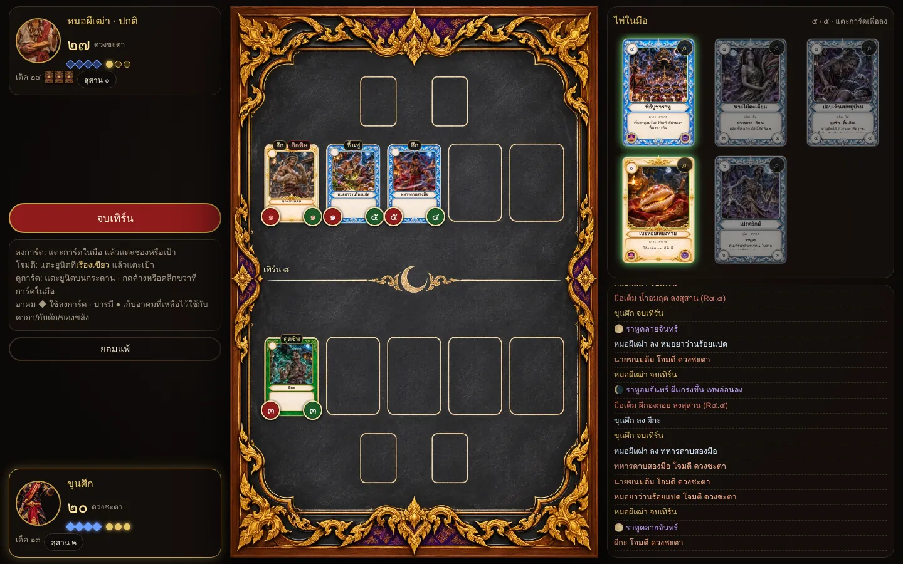
1สมัครและเลือกตัวละคร
- เปิดเกม กด "ยังไม่มีบัญชี? สมัครสมาชิก"
- ตั้งชื่อผู้ใช้ ใช้ได้เฉพาะ a–z ตัวเลข และขีดล่าง ยาว 3–20 ตัว และรหัสผ่านอย่างน้อย 6 ตัว
- เลือกตัวละคร ชายหรือหญิง แล้วตั้งชื่อในเกม (ภาษาไทยได้) ชื่อนี้คือชื่อที่คนอื่นเห็น
- เข้าสู่หน้าแรก บัญชีใหม่ได้โกลด์เริ่มต้น 20,000
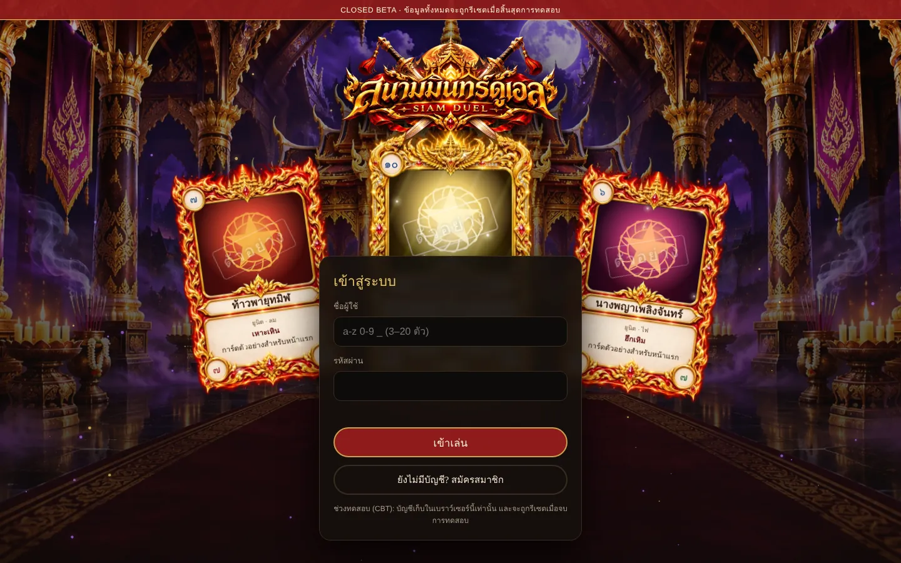
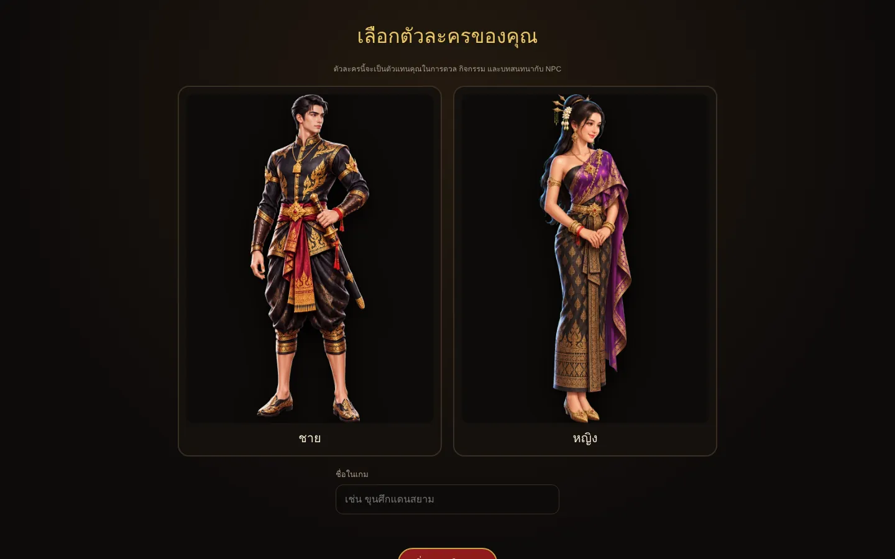
2หน้าแรกและเมนู
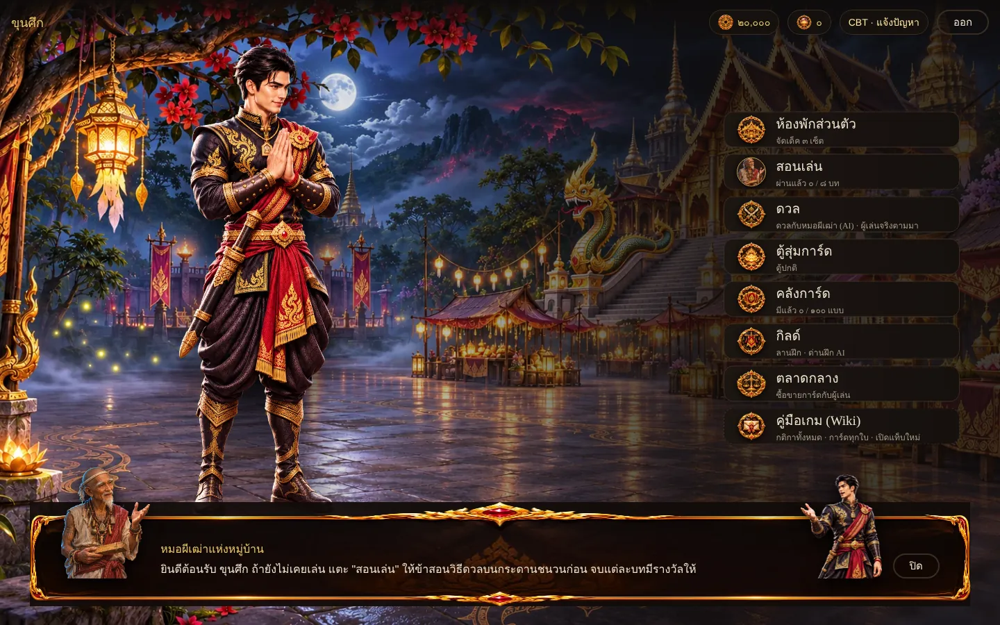
| เมนู | ทำอะไรได้ |
|---|---|
| ห้องพักส่วนตัว | จัดเด็ค ๓ เซ็ต ผูกเด็คกับโหมดดวล ตรวจกติกาอัตโนมัติ (อ่านต่อ) |
| สอนเล่น | บทเรียนแบบจับมือ ๘ บท จบบทได้รางวัล (อ่านต่อ) |
| ดวล | ดวลกับหมอผีเฒ่า (AI) ๓ ระดับ (อ่านต่อ) |
| ตู้สุ่มการ์ด | สุ่มการ์ดด้วยโกลด์ ตู้ปกติ และตู้ผู้สรรสร้างเมื่อเปิดรอบ (อ่านต่อ) |
| คลังการ์ด | ดูการ์ดที่มี ขยายดูรายละเอียด (อ่านต่อ) |
| กิลด์ | หอกิลด์ (กำลังพัฒนา) |
| ตลาดกลาง | ซื้อขายการ์ดกับผู้เล่นและพ่อค้า NPC (อ่านต่อ) |
| คู่มือเกม (Wiki) | หน้านี้ เปิดในแท็บใหม่ |
มุมขวาบนแสดงโกลด์ และแต้มบุญ ปุ่ม "CBT · แจ้งปัญหา" ใช้ดูข้อมูลช่วงทดสอบและส่งรายงานบั๊ก ด้านล่างเป็นกล่องคำพูดของหมอผีเฒ่าแห่งหมู่บ้าน ผู้นำทางที่จะคอยอธิบายทุกหน้า
3บทเรียนกับหมอผีเฒ่า
กดเมนู "สอนเล่น" ที่หน้าแรก บทเรียนคือการดวลจริงบนกระดาน แต่จัดการ์ดไว้ให้แล้ว หมอผีเฒ่าจะชี้ด้วยแสงไฟ ว่าต้องแตะตรงไหน ถ้ากดผิด จะบอกว่าผิดเพราะอะไร ไม่เสียอะไรเลย ลองใหม่ได้ทันที
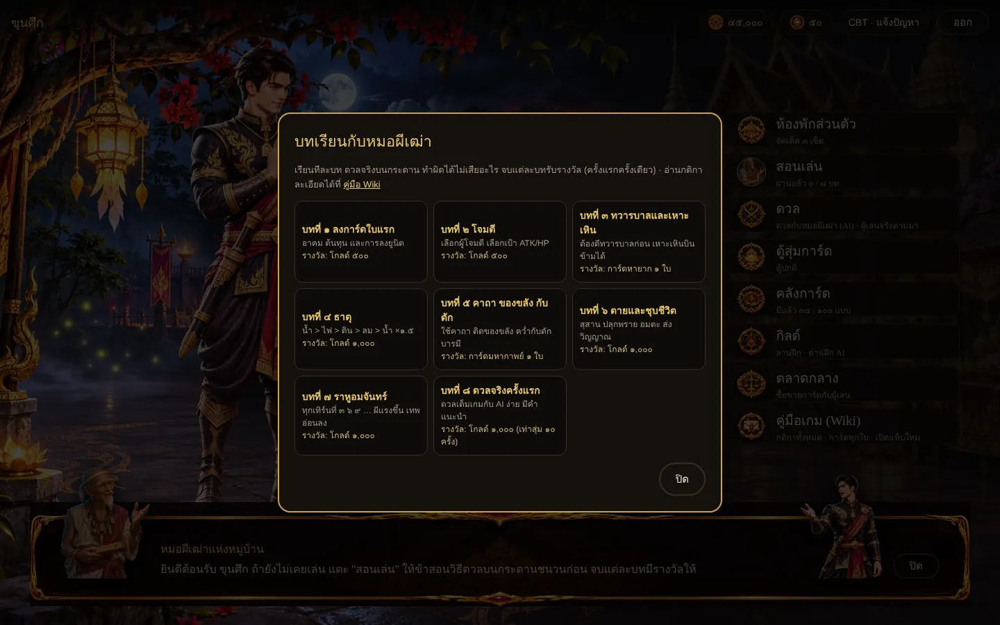
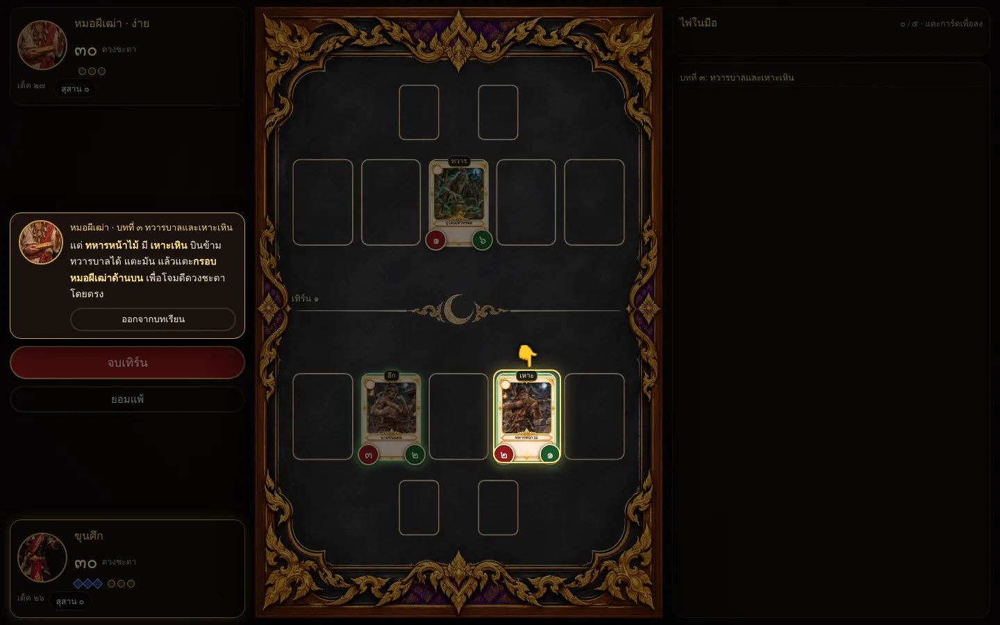
| บท | เรียนอะไร | รางวัล (ครั้งแรก) |
|---|---|---|
| 1 ลงการ์ดใบแรก | อาคม ต้นทุน ลากการ์ดลงช่อง จบเทิร์น บารมี | โกลด์ 500 |
| 2 โจมตี | ATK/HP เลือกผู้โจมตีและเป้า ยูนิตที่เพิ่งลงต้องรอเทิร์นหน้า | โกลด์ 500 |
| 3 ทวารบาลและเหาะเหิน | ต้องตีทวารบาลก่อน ตัวบินข้ามไปตีดวงชะตาได้ | การ์ดหายาก 1 ใบ |
| 4 ธาตุ | วงจรธาตุ ดาเมจ ×1.5 | โกลด์ 1,000 |
| 5 คาถา ของขลัง กับดัก | ใช้คาถา ติดของขลัง คว่ำกับดัก บารมี เป้าที่เลือกไม่ได้ | การ์ดมหากาพย์ 1 ใบ |
| 6 ตายและชุบชีวิต | สุสาน ชุบชีวิต อมตะ ส่งวิญญาณ | โกลด์ 1,000 |
| 7 ราหูอมจันทร์ | จังหวะราหู ผีแรงขึ้น วางแผนรอราหู | โกลด์ 1,000 |
| 8 ดวลจริงครั้งแรก | ดวลเต็มเกมกับ AI ง่าย มีคำแนะนำทุกตา (ปิดได้) | โกลด์ 1,000 |
4ส่วนประกอบของการ์ด
- 1ต้นทุน อาคมที่ต้องจ่ายเพื่อลงการ์ด
- 2ภาพการ์ด และกรอบ สีกรอบบอกระดับการ์ด
- 3ชื่อการ์ด
- 4ชนิด · ธาตุ · เผ่า
- 5คีย์เวิร์ด (ตัวหนา) และความสามารถ ข้อความยาวเลื่อนอ่านในกรอบได้
- 6ATK พลังโจมตี (วงซ้ายล่าง) — คาถา/ของขลัง/กับดักจะแสดงไอคอนชนิดแทน
- 7HP พลังชีวิต (วงขวาล่าง) — การ์ดไม่ใช่ยูนิตจะแสดงไอคอนธาตุแทน
คำที่เห็นบ่อยในข้อความการ์ด
| คำ | ความหมาย |
|---|---|
| ปลุกเสก | ทำงานทันทีเมื่อลงการ์ดใบนี้ |
| สิ้นใจ | ทำงานเมื่อการ์ดนี้ตายลงสุสาน (ถ้าถูกส่งวิญญาณจะไม่ทำงาน) |
| ต้นเทิร์น | ทำงานทุกยามเช้าของเจ้าของการ์ด |
| ราหูอมจันทร์: | ทำงานระหว่างช่วงราหู (อ่าน) |
| ยูนิตเรา / ฝ่ายเรา | ยูนิตบนสนามของผู้ควบคุมการ์ดนี้ |
| ทำลาย | ส่งลงสุสาน (อมตะและสิ้นใจยังทำงาน) |
| ส่งวิญญาณ | นำออกจากเกมถาวร ไม่ลงสุสาน ชุบชีวิตไม่ได้ |
| +X/+Y | เพิ่ม ATK X และ HP Y ("ถาวร" = ไม่หมดอายุ, "เทิร์นนี้" = หมดตอนจบเทิร์น) |
5ระดับการ์ด ๗ ระดับ
ระดับยิ่งสูง การ์ดยิ่งหายากและความสามารถยิ่งแรง แต่ต้นทุนก็สูงขึ้น ระดับตำนานขึ้นไปมีเอฟเฟกต์ระยิบระยับเมื่อเอียงการ์ด: ตำนาน = ประกายไฟแดง · พระเจ้า = เกล็ดทอง · ผู้สรรสร้าง = ฟอยล์รุ้ง
6ชนิด เผ่า และหมวด
ชนิดการ์ด ๔ แบบ
ยูนิต
มี ATK/HP ลงในช่องยูนิต ๕ ช่อง ใช้โจมตีและป้องกัน จ่ายด้วยอาคมเท่านั้นคาถา
ใช้แล้วเกิดผลทันที แล้วลงสุสาน จ่ายด้วยบารมีก่อน แล้วจึงอาคมของขลัง
มี ๒ แบบ: ติดยูนิต (ผูกกับยูนิต ไม่ใช้ช่อง ตายพร้อมยูนิต) และแบบตั้งสนาม (ใช้ช่องกับดัก/ของขลัง อยู่ถาวร)กับดัก
วางคว่ำในช่องกับดัก ศัตรูเห็นแค่ว่ามีกับดัก ทำงานเองครั้งเดียวเมื่อเงื่อนไขเกิด (ไม่ทำงานในเทิร์นที่วาง)เผ่า
เทพ · มนุษย์ · อสูร · หิมพานต์ · ผี · อากาศ เผ่ามีผลกับราหู (ผีแรงขึ้น เทพอ่อนลง) และเป็นเงื่อนไขของการ์ดหลายใบ เช่น "ชุบชีวิตผี" หรือ "ทำดาเมจแก่ผี/อสูร"
หมวดสำคัญ
| หมวด | กฎพิเศษ |
|---|---|
| ผู้ปกครอง | ไม่ได้รับผลจากราหู · ถูกขโมย (เมตตามหานิยม) ไม่ได้ · ถูกฟื้นจากสุสานศัตรูไม่ได้ · ใส่เด็ครวมกับเทพเจ้าได้ไม่เกิน 3 ใบ |
| เทพเจ้า | ถูกขโมยไม่ได้ · ถูกฟื้นจากสุสานศัตรูไม่ได้ · ใส่เด็ครวมกับผู้ปกครองได้ไม่เกิน 3 ใบ |
| วรรณคดี · 8 อาชีพ · สัตว์หิมพานต์ · ผี · อสูร | ใช้เป็นเงื่อนไขของการ์ดคู่หู เช่น ขุนแผน–ขุนช้าง–นางวันทอง ได้พลังเพิ่มเมื่ออยู่ด้วยกัน |
7ธาตุ
ลูกศรชี้จากผู้ชนะไปหาผู้แพ้: น้ำ ชนะ ไฟ · ไฟ ชนะ ดิน · ดิน ชนะ ลม · ลม ชนะ น้ำ ส่วนอากาศไม่ชนะและไม่แพ้ใคร
เมื่อยูนิตปะทะกัน ฝ่ายที่ธาตุชนะทำดาเมจ ×1.5 (ปัดลง) ฝ่ายที่แพ้ทางยังทำดาเมจปกติ
| ATK | 1 | 2 | 3 | 4 | 5 | 6 | 7 | 8 | 9 | 10 |
|---|---|---|---|---|---|---|---|---|---|---|
| เมื่อชนะธาตุ | 1 | 3 | 4 | 6 | 7 | 9 | 10 | 12 | 13 | 15 |
8กระดานชนวน
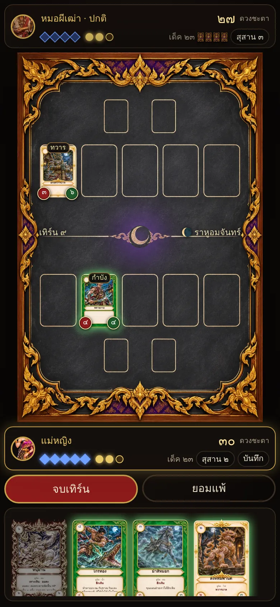
วิธีสั่งงาน
- ลงการ์ด: แตะการ์ดในมือที่เรืองเขียว แล้วแตะช่องว่างหรือเป้าที่เรืองแสง
- โจมตี: แตะยูนิตของเราที่เรืองเขียว แล้วแตะเป้าที่ขึ้นกรอบแดง (ยูนิตศัตรู หรือกรอบชื่อคู่ดวลเพื่อตีดวงชะตา)
- ยกเลิก: แตะการ์ดเดิมซ้ำ หรือกดปุ่ม "ยกเลิก" ที่แถบคำสั่ง
- ดูการ์ดขยาย: แตะยูนิตบนกระดาน หรือกดค้าง/คลิกขวาการ์ดในมือ (บน PC มีปุ่ม ⌕)
- ดูสุสาน: กดปุ่ม "สุสาน" ในกรอบผู้เล่น จะเห็นทั้งสุสานและเขตส่งวิญญาณ
- การ์ดที่มืดลงในมือคือยังลงไม่ได้ แตะดูจะบอกเหตุผล เช่น อาคมไม่พอ หรือสนามเต็ม
9เริ่มเกม
- ทั้งสองฝ่ายเริ่มที่ดวงชะตา 30 (สูงสุด 30) เด็คถูกสับ
- สุ่มว่าใครได้เริ่มก่อน ผู้เริ่มก่อนจั่ว 3 ใบ ผู้เล่นที่สองจั่ว 4 ใบ และได้การ์ดพิเศษ "เบี้ยหอยเสี่ยงทาย" (คาถาต้นทุน 0: อาคม +1 เฉพาะเทิร์นที่ใช้) เพื่อชดเชยที่เริ่มทีหลัง
- เปลี่ยนไพ่ (Mulligan): แตะการ์ดที่ไม่อยากได้ แล้วยืนยัน การ์ดเหล่านั้นถูกสับกลับเข้าเด็คและจั่วใหม่เท่าจำนวน ทำได้ครั้งเดียว
- เทิร์นแรกของแต่ละฝ่ายไม่จั่ว เทิร์นต่อจากนั้นจั่วยามเช้าทุกเทิร์น
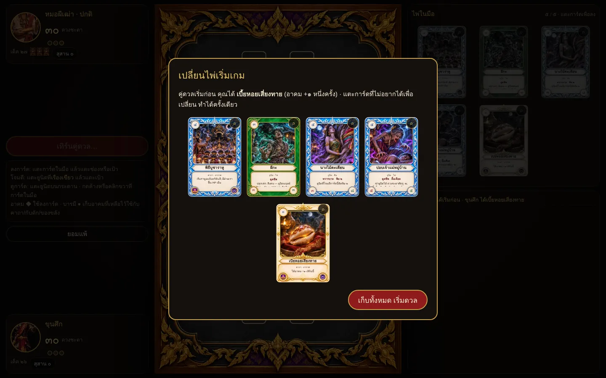
10ลำดับในหนึ่งเทิร์น
ตัวนับ "เทิร์นของเกม" เริ่มที่ 1 และเพิ่มทีละ 1 ทุกครั้งที่เปลี่ยนผู้เล่น (เทิร์นเราเป็นเลขหนึ่ง เทิร์นศัตรูเป็นเลขถัดไป) ตัวเลขนี้แสดงซ้ายมือกลางกระดาน และใช้นับราหู
ยามเช้า (อัตโนมัติ)
- อาคมสูงสุด +1 (ไม่เกิน 10) แล้วเติมเต็ม
- ตรวจราหูอมจันทร์
- จั่ว 1 ใบ
- ความสามารถ "ต้นเทิร์น" ทำงาน
- พิษทำดาเมจ · ฟื้นฟูฟื้น HP เต็ม
ยามกลางวัน (ตาเรา)
- ลงยูนิต ใช้คาถา ติดของขลัง วางกับดัก
- สั่งยูนิตโจมตี
- ทำได้กี่อย่างก็ได้ ลำดับใดก็ได้ ตราบที่อาคมพอ
ยามค่ำ (กดจบเทิร์น)
- บัฟ/ดีบัฟ "เทิร์นนี้" หมดอายุ
- อาคมที่เหลือ → บารมี (รวมไม่เกิน 3)
- นับถอยหลังสถานะ หลับ สายสิญจน์ ห้ามโจมตี
การจั่ว
- ถือไพ่ในมือได้สูงสุด 5 ใบ ถ้าจั่วตอนมือเต็ม การ์ดที่จั่วได้จะลงสุสานทันที (ถูกเผา)
- ถ้าเด็คหมดแล้วต้องจั่ว จะเสียดวงชะตา 1, 2, 3 … เพิ่มขึ้นทุกครั้ง
11อาคมและบารมี
อาคม ◆ (เพชรสีฟ้า) คือพลังงานหลัก ใช้ได้ภายในเทิร์นนั้น เทิร์นแรกมี 1 แล้วเพิ่มเทิร์นละ 1 จนสูงสุด 10
บารมี ● (ลูกปัดทอง) เกิดจากอาคมที่เหลือตอนจบเทิร์น สะสมได้สูงสุด 3 ใช้จ่ายได้เฉพาะคาถา กับดัก และของขลัง (ใช้กับยูนิตไม่ได้) เกมจะหักบารมีก่อนแล้วจึงหักอาคม
| เทิร์นของเรา (ครั้งที่) | อาคมสูงสุด |
|---|---|
| 1 | 1 |
| 2 | 2 |
| 3 | 3 |
| 5 | 5 |
| 10 ขึ้นไป | 10 (เพดาน) |
12การลงการ์ด
- ต้องจ่ายต้นทุนครบ บางการ์ดต้นทุนเปลี่ยนได้ เช่น สมเด็จพระเจ้าตากสินลดต้นทุนเมื่อดวงชะตาเราเหลือน้อย
- ยูนิตลงในช่องว่างที่เลือก สนามเต็ม 5 ตัวแล้วลงยูนิตเพิ่มไม่ได้ (โทเคนที่ถูกเรียกเกินจะไม่เกิด)
- ยูนิตที่เพิ่งลงโจมตีไม่ได้ในเทิร์นนั้น ยกเว้นมีฮึกเหิม
- ถ้าการ์ดต้องเลือกเป้า เกมจะให้เลือกหลังวางการ์ด เป้าที่เลือกได้จะเรืองแสง คาถาที่ไม่มีเป้าถูกต้องเลยจะใช้ไม่ได้ ส่วนยูนิตที่ปลุกเสกแล้วไม่มีเป้า จะลงได้แต่ความสามารถนั้นไม่เกิดผล
- การ์ดบางใบให้เลือกผล (เช่น +1/+1 หรือได้คีย์เวิร์ด) หรือเลือกจากสุสาน จะมีหน้าต่างให้เลือก
- กับดักวางคว่ำในช่องกับดักว่าง ๑ ใน ๒ ช่อง และทำงานได้ตั้งแต่เทิร์นศัตรูถัดไป
ลำดับเมื่อยูนิตลงสนาม: วางบนสนาม → ออร่าเริ่มทำงาน → ปลุกเสก → การ์ดอื่นที่รอเหตุการณ์ "ศัตรูลงยูนิต" ทำงาน
13การโจมตี
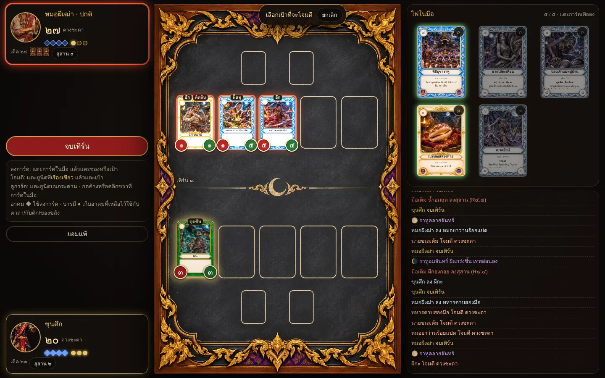
กติกาหลัก
- ยูนิตโจมตีได้เทิร์นละ 1 ครั้ง (บางใบได้ 2) เป้าหมายคือยูนิตศัตรูหรือดวงชะตาศัตรู
- ถ้าศัตรูมีทวารบาลที่ยังใช้งานได้ ต้องตีทวารบาลก่อน ยกเว้นผู้โจมตีมีเหาะเหิน
- ยูนิตที่มีกำบังถูกเลือกเป็นเป้าไม่ได้ จนกว่ามันจะโจมตีครั้งแรก
- ยูนิตที่ ATK เป็น 0 โจมตีไม่ได้
ยูนิตปะทะยูนิต
ทั้งคู่ทำดาเมจเท่า ATK ใส่กันพร้อมกัน ฝ่ายที่ธาตุชนะคูณ 1.5 ยูนิตที่ HP เหลือ 0 หรือน้อยกว่าตาย
ตีดวงชะตา
ทำดาเมจเท่า ATK ไม่มีตัวคูณธาตุ และไม่มีการตอบโต้
ลำดับเหตุการณ์
- ประกาศโจมตี (กำบังของผู้โจมตีหายถาวร)
- ความสามารถตอนโจมตีของผู้โจมตีทำงาน
- กับดักของฝ่ายรับที่รอ "ศัตรูโจมตี" ทำงาน — อาจยกเลิกการโจมตีได้
- ถ้าผู้โจมตียังอยู่ คิดดาเมจ
- ดูดชีพ → ตรวจความตาย (อมตะ) → ความสามารถตอนฆ่า/ถูกโจมตีทำงาน
14คีย์เวิร์ดทั้งหมด
คีย์เวิร์ดคือคำตัวหนาบนการ์ด แต่ละคำมีกฎตายตัว ตัวเลขท้ายแถวคือจำนวนแบบการ์ดที่มีคีย์เวิร์ดนั้นตั้งแต่ต้น
15สถานะผิดปกติ
| ป้ายบนการ์ด | ผล | หายเมื่อ |
|---|---|---|
| หลับ | โจมตีไม่ได้ ความสามารถตอนโจมตีไม่ทำงาน การ์ดจะดูมืดลง | นับลดตอนยามค่ำของเจ้าของ |
| สายสิญจน์ | ลบคีย์เวิร์ด ออร่า และความสามารถทั้งหมดชั่วคราว (ATK/HP ไม่เปลี่ยน) ทวารบาลที่ถูกสายสิญจน์ไม่ต้องตีก่อน อมตะไม่ทำงาน | ตามจำนวนเทิร์นที่ระบุ (ไม่ระบุ = ถาวร) หรือถูกล้าง |
| ติดพิษ | ยามเช้าของเจ้าของเสีย HP เท่าค่าพิษ 2 ครั้งแล้วหาย พิษไม่ซ้อนกัน ใช้ค่าที่มากกว่าและเริ่มนับใหม่ | ครบ 2 ครั้ง หรือถูกล้าง |
| ห้ามตี | โจมตีไม่ได้ | ตามจำนวนเทิร์นที่ระบุ |
| ต้องหอก | หอกโมกขศักดิ์ของกุมภกรรณ: โจมตีไม่ได้และไม่มีความสามารถ | รักษาได้ด้วยยาสังกรณีตรีชวาเท่านั้น |
การ์ดที่ล้างสถานะ (เช่น ยาวาสนา หมอยาว่านร้อยแปด) ลบพิษ สายสิญจน์ หลับ และห้ามตี ได้พร้อมกัน
16ราหูอมจันทร์
ดวงจันทร์กลางกระดานคือนาฬิกาของราหู ช่วงราหูเริ่มที่เทิร์นของเกม 3, 6, 9 … และกินเวลา 2 เทิร์น (ของทั้งสองฝ่าย) ระหว่างนั้นดวงจันทร์จะเรืองแสงม่วงและมีข้อความ "ราหูอมจันทร์"
| ระหว่างช่วงราหู | ผล |
|---|---|
| ยูนิตเผ่าผีทุกตัว | ATK +1 |
| ยูนิตเผ่าเทพทุกตัว | ATK −1 (ต่ำสุด 0) ยกเว้นพระราหู |
| ผู้ปกครอง | ไม่ได้รับผล |
| การ์ดที่มีข้อความ "ราหูอมจันทร์:" (คีย์เวิร์ดราหูจร) | พลังพิเศษทำงานตลอดช่วง หมดเมื่อราหูคลาย |
การ์ดบางใบเรียกราหูได้ทันที (เช่น พิธีบูชาราหู พระราหู) ถ้าเรียกทับช่วงเดิม จะใช้วันสิ้นสุดที่ไกลกว่า
17ความตาย สุสาน ส่งวิญญาณ
- หลังทุกการกระทำ เกมตรวจยูนิตที่ HP ≤ 0 พร้อมกัน แล้วย้ายลงสุสาน (เรียงช่องซ้ายไปขวา ผู้เล่นปัจจุบันก่อน)
- สุสานเปิดดูได้ทั้งสองฝ่าย การ์ดหลายใบชุบชีวิตหรือกลืนการ์ดจากสุสานได้
- ส่งวิญญาณ = นำออกจากเกมถาวร ไปอยู่ในเขตส่งวิญญาณ ไม่ลงสุสาน ชุบชีวิตไม่ได้ และสิ้นใจไม่ทำงาน
- อมตะ: ครั้งแรกที่จะตาย ลุกกลับขึ้นช่องเดิมด้วย HP 1 (บัฟถาวรยังอยู่ ดีบัฟและสถานะหายหมด) แล้วเสียอมตะ ใช้ไม่ได้ถ้าถูกส่งวิญญาณหรือถูกสายสิญจน์อยู่
- ของขลังที่ติดยูนิตลงสุสานพร้อมยูนิต
- โทเคน (ยูนิตที่เกิดจากเอฟเฟกต์) ตายแล้วหายไปเลย ไม่ลงสุสาน
- ถ้าเอฟเฟกต์ส่งต่อกันเกิน 100 ครั้งในการกระทำเดียว เกมจะหยุดคิวเพื่อกันวนไม่รู้จบ
18กฎความยิ่งใหญ่
- การ์ดระดับต่ำกว่าผู้สรรสร้าง ทำลาย ขโมย ส่งวิญญาณ ล็อกเป้า หรือแปลงร่างยูนิตเผ่าเทพระดับผู้สรรสร้างไม่ได้ (ดาเมจปกติยังทำได้)
- ผู้ปกครองและเทพเจ้า ถูกขโมยไม่ได้ ถูกสิงร่างไม่ได้ และถูกฟื้นจากสุสานศัตรูมาเป็นของเราไม่ได้
- ข้อความในเกมที่พูดถึงการ์ดผู้ปกครองใช้ถ้อยคำสุภาพเสมอ
19แพ้ ชนะ เสมอ
- ดวงชะตาฝ่ายใดเหลือ 0 หรือน้อยกว่า ฝ่ายนั้นแพ้ ถ้าเหลือ 0 พร้อมกันทั้งคู่ = เสมอ
- กดยอมแพ้ได้ทุกเมื่อ
- ครบ 40 เทิร์นของเกม ฝ่ายที่ดวงชะตามากกว่าชนะ เท่ากันเสมอ
- ในการดวลผู้เล่น หลุดการเชื่อมต่อเกิน 60 วินาทีนับเป็นแพ้ (กำลังพัฒนา)
20ดวลกับ AI (หมอผีเฒ่า)เล่นได้แล้ว
กดเมนู "ดวล" เลือกเด็คและระดับฝีมือ แล้วกด "เริ่มดวล" ผู้เล่นใหม่เลือกเด็คสำเร็จรูปยืมเล่นได้เลย
| ระดับ | ลักษณะ |
|---|---|
| ง่าย | เล่นตามสถานการณ์แต่พลาดบ้าง เหมาะกับการหัดเล่น |
| ปกติ | เลือกทางที่ได้เปรียบที่สุดในตานั้น |
| ยาก | คิดล่วงหน้าว่าเราจะสวนกลับอย่างไรในเทิร์นถัดไป |
21กติกาจัดเด็ค
| กติกา | รายละเอียด |
|---|---|
| จำนวน | เด็คต้องมี 30 ใบพอดี |
| ชื่อเดียวกันต่อเด็ค | ธรรมดา/ทั่วไป 3 · หายาก/มหากาพย์ 2 · ตำนาน/พระเจ้า 1 · ผู้สรรสร้างได้แค่ 1 ใบทั้งเด็ค |
| การ์ดระดับสูง | ตำนาน + พระเจ้า + ผู้สรรสร้าง รวมไม่เกิน 3 ใบ |
| หมวดพิเศษ | เทพเจ้า + ผู้ปกครอง รวมไม่เกิน 3 ใบ |
| การ์ดที่ใช้ | ใช้ได้เฉพาะการ์ดที่มีในคลัง และจำนวนไม่เกินที่มีอยู่ |
22ห้องพักและเด็ค ๓ เซ็ต
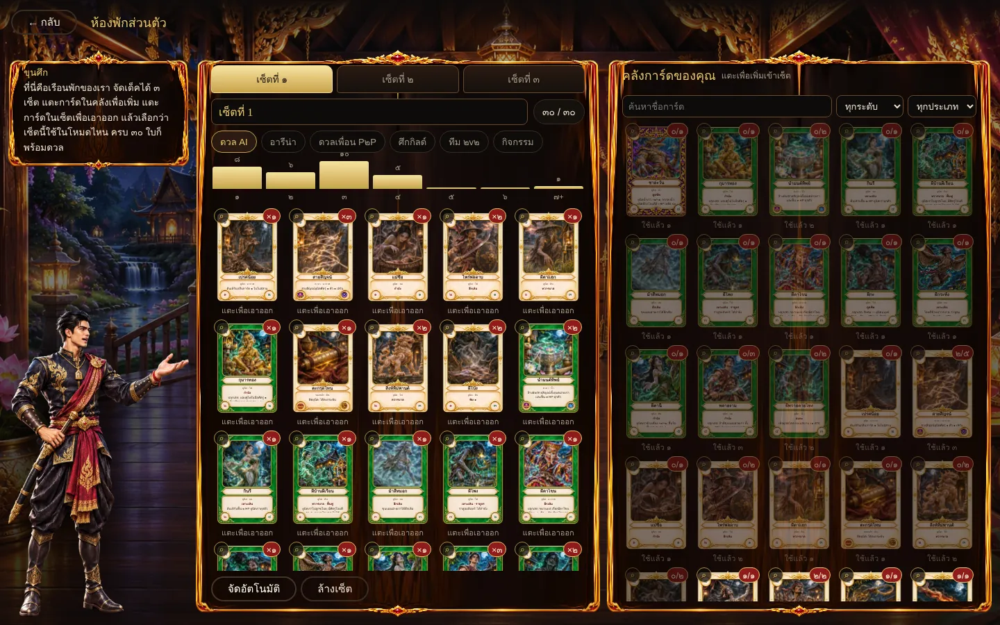
- มีเด็คได้ 3 เซ็ต ตั้งชื่อเองได้ แตะแท็บด้านบนเพื่อสลับเซ็ต
- แตะการ์ดฝั่งคลังเพื่อใส่ แตะการ์ดในเด็คเพื่อเอาออก
- ปุ่ม "จัดให้อัตโนมัติ" เลือกการ์ดจากคลังให้ครบ 30 ใบตามกติกา
- ผูกเด็คกับโหมดการดวลได้ (ดวล AI, อารีน่า, ดวลเพื่อน, กิลด์ ฯลฯ) เซ็ตเดียวผูกได้หลายโหมด
- ตอนลงขายการ์ดในตลาด ถ้าการ์ดในเด็คเหลือไม่พอ เกมจะเอาออกจากเด็คให้อัตโนมัติ
23เด็คสำเร็จรูป
เด็ค 4 ชุดนี้ให้ยืมเล่นกับ AI ได้ทันทีแม้ยังไม่มีการ์ด และเป็นเด็คที่หมอผีเฒ่าใช้สู้กับเรา แต่ละชุดมีระดับตำนาน 1 ใบ ไม่มีพระเจ้าและผู้สรรสร้าง
24กลยุทธ์เบื้องต้น
ลงการ์ดให้คุ้มอาคม
พยายามใช้อาคมให้หมดทุกเทิร์น จัดเด็คให้มีการ์ดต้นทุน 1–3 พอสมควร ช่วงต้นเกมจะได้ไม่ว่างแลกให้คุ้ม
ก่อนสั่งโจมตี ดูธาตุและ HP ของทั้งสองฝ่าย ตีให้ศัตรูตายโดยตัวเรารอด หรือแลกตัวเล็กของเรากับตัวใหญ่ของศัตรูทวารบาลคือกำแพง
ยูนิตทวารบาล HP สูงช่วยกันดวงชะตาได้ดี ส่วนตัวที่เหาะเหินคือทางลัดตีหน้าศัตรูนับราหู
เด็คผีรอเทิร์น 3–4, 6–7, 9–10 ก่อนบุกหนัก เด็คเทพรีบปิดเกมก่อนราหูเก็บคาถาไว้แก้ทาง
คาถาทำลายหรือสายสิญจน์ เก็บไว้ใช้กับยูนิตตัวอันตรายของศัตรู อย่าใช้กับตัวเล็กระวังกับดัก
ศัตรูมีกับดักคว่ำอยู่ ลองตีด้วยตัวเล็กก่อน ให้กับดักทำงานกับตัวที่เสียน้อยกว่าอย่าให้มือเต็ม
ถือครบ 5 ใบตอนจั่ว การ์ดจะถูกเผาทิ้ง ลงการ์ดที่ไม่จำเป็นต้องเก็บก่อนจบเทิร์นส่งวิญญาณตัวอมตะ
ยูนิตอมตะและพวกที่มีสิ้นใจแรง ๆ ควรกำจัดด้วยการส่งวิญญาณ จะไม่กลับมาอีกใช้บารมี
เทิร์นที่อาคมเหลือ ไม่เสียเปล่า กลายเป็นบารมีไว้เปิดคาถาหรือกับดักพร้อมยูนิตใหญ่ในเทิร์นหน้า25โกลด์และแต้มบุญ
โกลด์
เงินหลักของเกม ใช้สุ่มการ์ดและซื้อในตลาดกลาง บัญชีใหม่ได้ 20,000 ได้เพิ่มจากรางวัลบทเรียน และการขายการ์ดในตลาด
ระบบตั้งใจให้โกลด์ถูกเผาออกจากเกมเพื่อรักษามูลค่า: ค่าสุ่มตู้ทั้งหมด และค่าธรรมเนียมตลาด 5%
แหล่งรายได้ประจำ เช่น ภารกิจรายวัน/สัปดาห์ และรางวัลดวลผู้เล่น กำลังพัฒนา
แต้มบุญ
ได้ 1 แต้มต่อการสุ่มตู้ปกติ 1 ครั้ง ผูกกับบัญชี เทรดไม่ได้ ซื้อด้วยโกลด์ไม่ได้
เป้าหมายระยะยาว: แลกการ์ดพระเจ้า 50,000 แต้มบุญ (เฉพาะแบบที่ยังออกไม่ครบ) และร้านแต้มบุญสำหรับการ์ดที่เลือกได้ กำลังพัฒนา
26ตู้สุ่มการ์ด
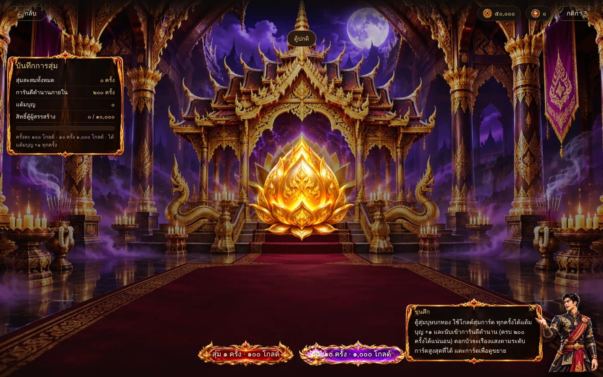
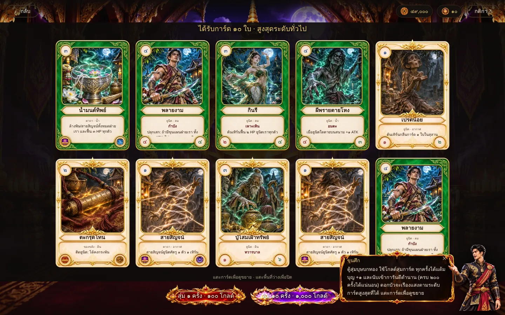
| ระดับ | อัตรา | หมายเหตุ |
|---|---|---|
| ธรรมดา | 60.109% | |
| ทั่วไป | 27% | |
| หายาก | 9% | |
| มหากาพย์ | 2.89% | |
| ตำนาน | 1% | หลังสุ่มครั้งที่ 150 ที่ยังไม่ได้ตำนาน โอกาสเพิ่ม +0.5% ทุกครั้ง · การันตีภายใน 200 ครั้ง |
| พระเจ้า | 0.001% | แบบละ 3 ใบทั้งเซิร์ฟเวอร์ ถ้าออกครบแล้วจะได้ตำนานแทน |
| ผู้สรรสร้าง | 0% | ไม่อยู่ในตู้ปกติ ได้จากตู้ผู้สรรสร้างเท่านั้น |
- ราคา 100 โกลด์/ครั้ง หรือ 1,000 โกลด์/10 ครั้ง โกลด์ถูกเผาทั้งหมด
- ได้ระดับตำนานหรือพระเจ้า ตัวนับการันตีจะเริ่มใหม่
- การสุ่มทำบนเซิร์ฟเวอร์ ผลแก้ไขจากเครื่องผู้เล่นไม่ได้
- ทุกครั้งที่สุ่มได้ แต้มบุญ +1 และนับเข้าจำนวนครั้งสะสมตลอดชีพ ใช้เป็นสิทธิ์เข้าตู้ผู้สรรสร้าง
27การ์ดจำนวนจำกัด
- พระเจ้า: 4 แบบ แบบละ 3 ใบทั้งเซิร์ฟเวอร์ รวม 12 ใบ
- ผู้สรรสร้าง: 10 แบบ แบบละ 1 ใบทั้งเซิร์ฟเวอร์ รวม 10 ใบ
- ทุกใบมีเลขรันเลขไทย รูปแบบ "ลำดับ/ทั้งหมด" เช่น ๑/๓ ๒/๓ ๓/๓ และ ๑/๑ แสดงที่ขอบล่างการ์ด
- ห้ามผลิตเพิ่มไม่ว่ากรณีใด รวมถึงกิจกรรมและของขวัญจากแอดมิน
- ในการดวล การ์ดที่มีเลขรันทำงานเหมือนการ์ดปกติ เลขมีผลแค่การสะสม
28ตู้ผู้สรรสร้าง
- ปรากฏในหน้าตู้สุ่มเฉพาะเมื่อแอดมินเปิดรอบ (เช่น เทศกาลลอยกระทง) รอบละการ์ดผู้สรรสร้าง 1 แบบที่ยังไม่มีเจ้าของ
- สิทธิ์เข้า: สุ่มตู้ปกติสะสมครบ 10,000 ครั้ง (นับตลอดชีพ ไม่รีเซ็ต)
- ค่าสุ่ม 5,000 โกลด์/ครั้ง โอกาส 0.5% ไม่มีการันตี ไม่มีรางวัลปลอบใจ โกลด์ถูกเผาทั้งหมด
- มีผู้ได้ → รอบจบทันที ประกาศทั้งเซิร์ฟเวอร์โดยไม่บอกชื่อผู้ได้
29ตลาดกลาง
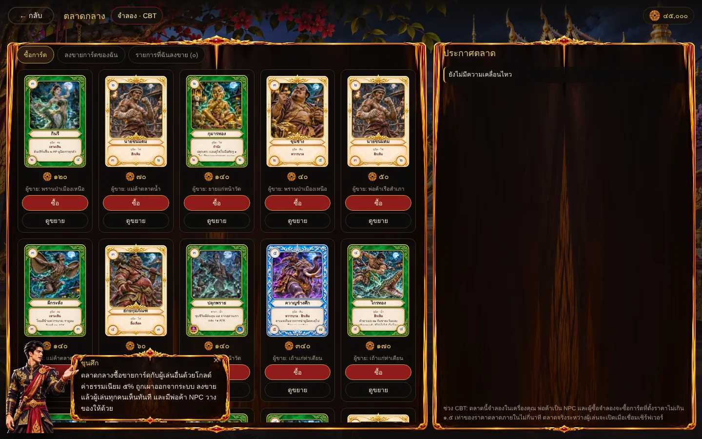
- ซื้อ: แท็บ "ซื้อการ์ด" กดซื้อ ระบบโอนโกลด์และการ์ดในขั้นตอนเดียว ถ้ามีคนซื้อตัดหน้าไปก่อน จะแจ้งว่ารายการถูกขายแล้ว
- ขาย: แท็บ "ลงขายการ์ดของฉัน" ตั้งราคา (ขั้นต่ำ 10 โกลด์) แล้วกดลงขาย ผู้เล่นทุกคนเห็นทันที การ์ดที่ลงขายจะออกจากคลังชั่วคราว
- ได้เงิน: เมื่อขายออก ได้โกลด์ทันทีหักค่าธรรมเนียม 5% (ถูกเผา) แม้ไม่ได้ออนไลน์อยู่
- ยกเลิก: แท็บ "รายการที่ฉันลงขาย" กดยกเลิก การ์ดกลับเข้าคลัง
- ราคาตลาดโดยประมาณ (ใช้อ้างอิง): ธรรมดา 50 · ทั่วไป 120 · หายาก 400 · มหากาพย์ 1,500 · ตำนาน 8,000
- พ่อค้า NPC (เช่น แม่ค้าตลาดน้ำ นายฮ้อยอีสาน) วางขายการ์ดเสมอ และเติมของเมื่อเหลือน้อย
- ผู้ขายแสดงเป็น "ผู้เล่น" ไม่เปิดเผยชื่อ การ์ดพระเจ้า/ผู้สรรสร้างที่วางขายและขายได้จะถูกประกาศทั้งเซิร์ฟเวอร์โดยไม่ระบุชื่อ
30คลังการ์ดและฉบับสะสม
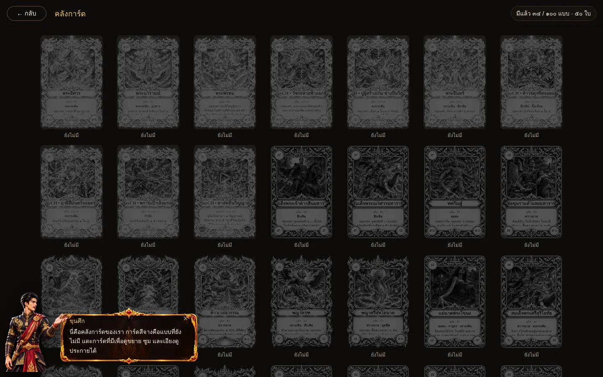
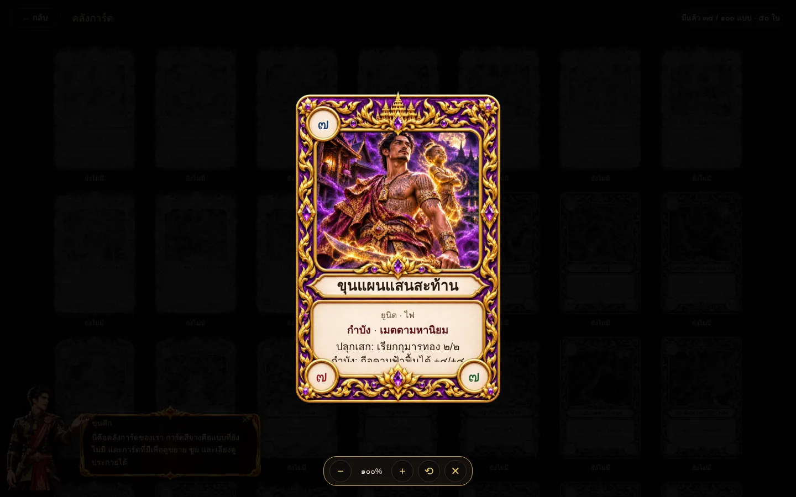
ฉบับสะสม: การ์ดระดับตำนาน พระเจ้า และผู้สรรสร้าง (20 แบบ) มีภาพหน้า-หลังความละเอียดสูง ด้านหลังเป็นลายประจำแบบ สลักเลขรันและตราของแท้ ใช้ดูและเทรดเท่านั้น ไม่มีผลในการดวล ไฟล์เข้ารหัสและเก็บในเครื่องเจ้าของ กำลังพัฒนา
31ประกาศทั้งเซิร์ฟเวอร์
| เหตุการณ์ | ข้อความ | บอกชื่อไหม |
|---|---|---|
| สุ่มได้การ์ดพระเจ้า | "ประกาศ: การ์ด … ระดับพระเจ้า ๑/๓ ถูกค้นพบแล้ว" | ไม่บอก |
| ได้การ์ดผู้สรรสร้าง | "การ์ด … ระดับผู้สรรสร้าง มีผู้ได้รับไปดูแลต่อแล้ว" | ไม่บอก |
| วางขาย/ขายได้ในตลาด (พระเจ้า/ผู้สรรสร้าง) | ประกาศชื่อการ์ดและเลขรัน | ไม่บอก |
| เทรดตัวต่อตัว (พระเจ้า/ผู้สรรสร้าง) | "การ์ด … ได้รับการครอบครองโดย {ชื่อผู้รับ}" ผู้รับต้องยืนยันก่อน | บอกชื่อผู้รับ กำลังพัฒนา |
| ตู้ผู้สรรสร้างเปิด | "ตู้ผู้สรรสร้างเปิดแล้ว: {ชื่อรอบ}" | — |
หลังได้การ์ด เจ้าของตั้งได้ว่าจะแสดงชื่อเมื่อใช้การ์ดในดวลหรือไม่ (ค่าเริ่มต้นซ่อน) กำลังพัฒนา
32ระบบที่กำลังพัฒนา
| ระบบ | รายละเอียดโดยย่อ |
|---|---|
| เทรดการ์ดตัวต่อตัว (1:1) | ส่งลิงก์หรือ QR ให้เพื่อน ทั้งสองฝ่ายยืนยัน ระบบสลับการ์ดในขั้นตอนเดียว |
| ดวลเพื่อน P2P | สร้างห้องได้รหัส ลิงก์ และ QR เครื่องสองฝั่งเชื่อมกันตรง ทั้งสองเครื่องตรวจผลกันทุกเทิร์นกันโกง |
| ดวลออนไลน์ / อารีน่า | เซิร์ฟเวอร์จับคู่และเป็นกรรมการ จับเวลาเทิร์น 75 วินาที มีรางวัลโกลด์ |
| ดวลทีม 2v2 | ดวงชะตาทีมรวม 40 เล่นพร้อมกันในเทิร์นเดียว เห็นไพ่เพื่อนร่วมทีม |
| กิลด์ | สมาชิก แชท คลังกิลด์ ลานฝึก ด่านฝึก AI โจทย์ปริศนารายสัปดาห์ |
| กติกาพิเศษ (Ruleset) | เช่น คืนราหูนิรันดร์ ศึกสามัญชน ศึกธาตุเดียว ดวลสายฟ้า สงกรานต์ (น้ำ ×2) |
| ภารกิจ ร้านแต้มบุญ ตู้นิรภัยฉบับสะสม | ตามเอกสารเศรษฐกิจของเกม |
33การ์ดทุกใบ
34โทเคน
โทเคนคือยูนิตหรือของขลังที่เกิดจากความสามารถของการ์ด ไม่อยู่ในเด็ค ตายแล้วหายไปเลย ไม่ลงสุสานและชุบชีวิตไม่ได้
35อภิธานศัพท์
| คำ | ความหมาย |
|---|---|
| ดวงชะตา | พลังชีวิตของผู้เล่น เริ่ม 30 |
| อาคม | พลังงานใช้ลงการ์ดในเทิร์นนั้น |
| บารมี | อาคมที่เหลือสะสมไว้ สูงสุด 3 ใช้กับคาถา/กับดัก/ของขลัง |
| สุสาน | ที่อยู่ของการ์ดที่ตายหรือใช้แล้ว |
| เขตส่งวิญญาณ | ที่อยู่ของการ์ดที่ออกจากเกมถาวร |
| เทิร์นของเกม | ตัวนับที่เพิ่มทุกครั้งที่เปลี่ยนผู้เล่น ใช้นับราหูและครบ 40 เทิร์น |
| ยามเช้า / ยามกลางวัน / ยามค่ำ | ช่วงต้นเทิร์น ช่วงเล่น และช่วงจบเทิร์น |
| ปลุกเสก / สิ้นใจ | ความสามารถตอนลงการ์ด / ตอนตาย |
| ออร่า | ความสามารถต่อเนื่องที่มีผลตลอดเวลาที่การ์ดอยู่บนสนาม เช่น "ยูนิตเราทุกตัว +0/+2" |
| โทเคน | ยูนิตที่เกิดจากเอฟเฟกต์ ตายแล้วหายไป |
| เลขรัน | หมายเลขเลขไทยของการ์ดจำนวนจำกัด เช่น ๒/๓ |
| แต้มบุญ | แต้มจากการสุ่ม ใช้แลกการ์ดพระเจ้าและของในร้านแต้มบุญ |
| การันตี (pity) | ตัวนับที่รับประกันได้ระดับตำนานภายใน 200 ครั้ง |
| CBT | ช่วงทดสอบปิด ข้อมูลจะถูกรีเซตเมื่อสิ้นสุด |
36คำถามที่พบบ่อย
ทำไมยูนิตของฉันโจมตีไม่ได้?
เป็นได้หลายสาเหตุ: เพิ่งลงในเทิร์นนี้ (ไม่มีฮึกเหิม) · โจมตีไปแล้วในเทิร์นนี้ · ATK เป็น 0 · หลับ ห้ามตี หรือต้องหอก แตะยูนิตแล้วเกมจะบอกเหตุผล
ทำไมฉันตีดวงชะตาศัตรูไม่ได้?
ศัตรูมียูนิตทวารบาลอยู่ ต้องตีทวารบาลก่อน หรือใช้ยูนิตที่มีเหาะเหิน ยกเว้นทวารบาลตัวนั้นถูกสายสิญจน์หรือมีกำบังอยู่
ทำไมเลือกยูนิตศัตรูบางตัวเป็นเป้าไม่ได้?
ตัวนั้นอาจมีกำบัง หรือการ์ดของเรามีเงื่อนไข เช่น ใช้กับผู้ปกครอง/เทพไม่ได้ หรือต้นทุนต้องไม่เกินที่กำหนด เป้าที่เลือกได้จะเรืองแสงเสมอ
การ์ดในมือหายไปเอง?
ถ้ามือเต็ม 5 ใบตอนจั่ว การ์ดที่จั่วได้จะลงสุสานทันที เปิดดูได้ที่ปุ่มสุสาน และดูได้ในบันทึกการเล่น
ธาตุใช้กับคาถาไหม?
ไม่ใช้ ตัวคูณ 1.5 ใช้เฉพาะยูนิตปะทะยูนิต
ทำลาย กับ ส่งวิญญาณ ต่างกันอย่างไร?
ทำลายส่งลงสุสาน อมตะและสิ้นใจยังทำงาน และอาจถูกชุบชีวิตได้ ส่วนส่งวิญญาณนำออกจากเกมถาวร ไม่มีอะไรทำงานต่อ
สุ่มตู้แล้วได้การ์ดซ้ำ ทำอะไรได้บ้าง?
ใส่เด็คได้ตามลิมิต หรือลงขายในตลาดกลาง ระบบถวายการ์ดซ้ำเป็นแต้มบุญกำลังพัฒนา
ทำไมเลขทั้งหมดในเกมเป็นเลขไทย?
เพื่อบรรยากาศไทยเต็มรูปแบบ ช่องกรอกราคาในตลาดพิมพ์เลขอารบิกได้ ระบบแปลงเป็นเลขไทยให้เอง
ข้อมูลของฉันจะหายไหม?
ช่วง CBT ข้อมูลทั้งหมดจะถูกรีเซตเมื่อสิ้นสุดการทดสอบ
37ช่วงทดสอบ CBT
- เปิดให้เห็นการ์ดทุกใบ เพื่อให้ทดสอบได้เต็มที่
- บัญชี โกลด์ การ์ด และเด็ค จะถูกรีเซตเมื่อสิ้นสุดการทดสอบ
- เจอปัญหา กดปุ่ม "CBT · แจ้งปัญหา" มุมขวาบนในเกม
- ตัวเลข อัตรา และราคาในคู่มืออาจปรับระหว่างทดสอบ